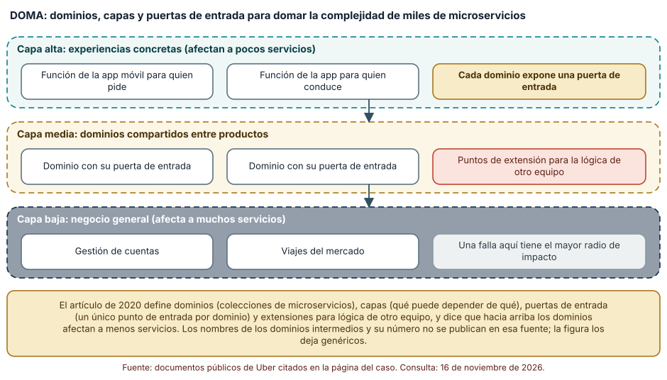
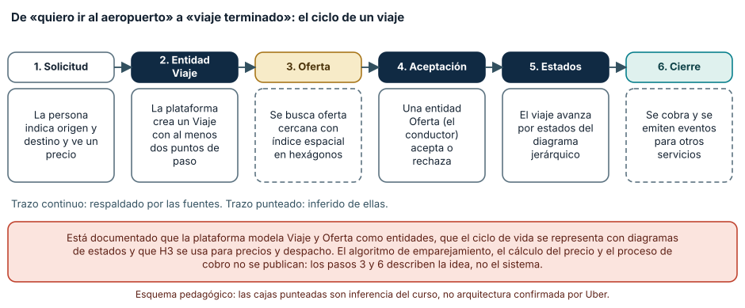
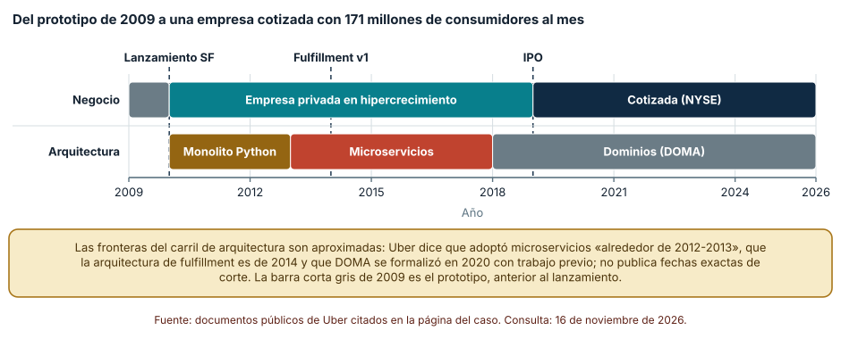

Cómo leer las etiquetas. [Documentado] = lo dice una fuente pública citada al final; [Inferido] = deducción del curso, puede ser falsa; [No se sabe] = no hay fuente pública consultada. Las cifras llevan fecha y fuente. No se reconstruye arquitectura confidencial.
Ficha histórica
| Dato | Valor | Fuente |
|---|---|---|
| Nombre | Uber Technologies, Inc. | [U2] |
| Fundadores | Garrett Camp y Travis Kalanick | [U1] |
| Origen de la idea | Invierno de fines de 2008, en la conferencia LeWeb de París; la idea de Camp comenzó como una «limusina compartida» y terminó siendo un servicio bajo demanda desde un iPhone | [U1] |
| Trabajo en serio | Desde marzo de 2009 Camp desarrolla el prototipo; Kalanick se suma en el verano de 2009 como «Chief Incubator» | [U1] |
| Primer gerente general | Ryan Graves; su primer día fue el 1 de marzo (de 2010) | [U1] |
| Prueba inicial | Enero de 2010, Nueva York, con tres coches | [U1] |
| Lanzamiento | San Francisco, 31 de mayo de 2010 | [U1] |
| Sede | San Francisco (datación de sus comunicados) | [U2] |
| Salida a bolsa | Precio fijado el 9 de mayo de 2019: 180 millones de acciones a 45 dólares; cotiza en la NYSE (UBER) | [U3] |
| Escala (cuarto trimestre de 2024) | 171 millones de consumidores activos al mes (MAPCs); 3 100 millones de viajes, unos 33 millones por día; 44 200 millones de USD en reservas brutas | [U2] |
| Escala (año 2024) | 11 273 millones de viajes; 162 773 millones de USD en reservas brutas; 43 978 millones en ingresos; 2 799 millones de resultado operativo | [U2] |
| Estado actual | Sociedad cotizada; su director ejecutivo, Dara Khosrowshahi, presenta los vehículos autónomos como una oportunidad central | [U2] |
Qué no se afirma. El nombre original del producto, la ronda de financiación inicial, el número de ciudades por año y las fechas de lanzamiento de Uber Eats, Freight y otros productos no se verificaron en fuentes primarias consultadas y por eso no figuran con fecha. Que Kalanick fuera cofundador lo dice él mismo en el texto de 2010; las cifras bursátiles proceden del comunicado de la empresa.
Contexto y problema
Documentado. Kalanick cuenta que el punto de partida fue «el horrible problema de los taxis en San Francisco»: quedarse varado en la calle era familiar para cualquiera. La propuesta inicial de Camp fue un servicio de limusinas compartidas con un coche, un conductor y una aplicación de iPhone para pedirlo a demanda ([U1]).
Los autores esperaban que el negocio fuera «de baja tecnología, sobre todo operativo»; el propio texto añade «poco sabíamos» ([U1]). Ese contraste es la lección de ingeniería del caso: un problema aparentemente operativo (encontrar un coche cercano) exige localización, emparejamiento, precios, pagos y confianza.
Problemas que el negocio tuvo que resolver a la vez.
- Encontrar oferta cercana rápido, en una ciudad con miles de personas pidiendo y conduciendo.
- Fijar un precio que equilibre demanda y oferta de forma continua. El artículo sobre H3 dice que la rejilla sirve para «optimizar precios y despacho» y «fijar precios dinámicos» a escala de ciudad ([U5]).
- Mantener el estado correcto de millones de viajes aunque fallen servicios o regiones ([U7]).
- Crecer en producto sin que cada función nueva multiplique la complejidad de los microservicios ([U6]).
Mercado, usuarios y casos de uso
| Rol | Qué hace y qué gana | Qué cambia en su experiencia | Respaldo |
|---|---|---|---|
| Persona que pide un viaje | Llega a un destino sin esperar en la calle | Ve el precio y el estado del viaje en la app | [U1], [U2] |
| Persona que pide comida o un paquete | Recibe un pedido | La plataforma gestiona un mercado con tres partes: quien pide, quien reparte y quien vende | [U7] |
| Conductor o repartidor | Decide cuándo trabajar y qué aceptar, y cobra por viaje | La plataforma le ofrece el trabajo; en el cuarto trimestre de 2024 conductores y repartidores ganaron en conjunto 20 000 millones de USD, propinas incluidas | [U2] |
| Restaurante o comercio | Vende a través de la plataforma | [No se sabe] las condiciones comerciales | [U7] |
| Empresa cliente | Usa Uber para movilidad de empleados o envíos | [No se sabe] el detalle en las fuentes consultadas | — |
| Ingeniería y operaciones de Uber | Construye y opera la plataforma | Dominios, capas y puertas de entrada ordenan quién puede llamar a quién | [U6] |
| Reguladores y administraciones locales | Fijan reglas de transporte y de trabajo en cada ciudad | [No se sabe]; el caso no entra en regulación | — |
Escala del mercado. Entre 2023 y 2024 la plataforma pasó de 150 a 171 millones de consumidores activos al mes y de 2 601 a 3 068 millones de viajes por trimestre ([U2]). Variación de experiencia: la misma plataforma ofrece reglas distintas según el producto: reservas con conductor confirmado por adelantado, ofertas de varios viajes simultáneos, colas virtuales en aeropuertos, el mercado de tres lados de Uber Eats y envíos con Uber Direct ([U7]).
Funcionalidad de principio a fin
- Primer contacto. Se instala la aplicación. En 2010 el crecimiento comenzó con invitaciones a amigos y una gerencia que recorría el circuito de demos de empresas emergentes ([U1]).
- Registro. [No se sabe] el proceso actual de verificación de usuarios y conductores en las fuentes consultadas.
- Pedir. La persona indica origen y destino. [Inferido] que la app muestra un precio estimado antes de aceptar; no se documenta el cálculo.
- Emparejar. La plataforma de cumplimiento (fulfillment) captura la intención y la satisface emparejándola con el proveedor adecuado ([U7]). Modela un viaje con una entidad Viaje (al menos dos puntos de paso) y una entidad Oferta, que representa a una persona real capaz de hacer el trabajo ([U7]).
- Viaje en curso. El ciclo de vida se representa como un diagrama de estados jerárquico, formalizado con Protobuf y un marco genérico en Java ([U7]).
- Pago. [No se sabe] cómo se procesa el cobro ni qué proveedores se usan. [Documentado] que Uber informa «reservas brutas» e «ingresos» como cifras distintas (sección 5).
- Soporte. [No se sabe] el flujo de atención en las fuentes consultadas.
- Operación diaria. La plataforma gestiona más de un millón de usuarios simultáneos y miles de millones de viajes al año en más de diez mil ciudades ([U7]); cientos de microservicios dependen de ella como fuente de verdad del estado de viajes y sesiones.
Negocio y economía
Modelo (documentado). Uber informa dos métricas separadas: las reservas brutas (el valor de lo que se compra en la plataforma) y los ingresos (lo que Uber reconoce como suyo). En 2024 las reservas fueron de 162 773 millones de USD y los ingresos de 43 978 millones ([U2]).

Cómo leer la figura. Hay dos grupos de columnas: a la izquierda las reservas brutas y a la derecha los ingresos; en cada grupo la barra gris es 2023 y la teal 2024. Compare la altura de los dos grupos: los ingresos son una fracción de las reservas. Dónde deja de valer. La proporción (27 % en ambos años) es un cálculo propio y no es «la comisión» de Uber: los ingresos incluyen distintas líneas y reconocimientos contables que el comunicado no desglosa. Tampoco dice nada de rentabilidad por viaje.
Mezcla por línea. En el cuarto trimestre de 2024 la movilidad aportó 22 800 millones de reservas (+18 % en dólares) y el reparto 20 100 millones (+18 %) ([U2]); el resto, hasta los 44 197 millones, es diferencia no desglosada en esa fuente.
Costos. [Documentado] que el resultado operativo de 2024 fue de 2 799 millones de USD, frente a 1 110 millones en 2023 ([U2]). [No se sabe] el coste por viaje, de infraestructura, de seguros o de incentivos. [Inferido] que, como la plataforma no es dueña de los vehículos, sus costos relevantes son tecnología, incentivos, seguros y operaciones locales; el comunicado no los separa.
Ventajas competitivas. [Inferido] Una red con densidad en cada ciudad (más oferta reduce la espera, más demanda atrae oferta); datos de ubicación y de precios a escala; y una plataforma de cumplimiento que sirve a varias verticales, que Uber describe como «una capacidad fundacional que permite escalar rápido nuevas verticales» ([U7]).
Arquitectura y esquemas
6.1 Contexto

Cómo leer la figura. Se lee de izquierda a derecha: la demanda pide, la plataforma casa y la oferta responde. Las flechas continuas son el camino principal y la punteada es la relación con el comercio. Dónde deja de valer. No incluye mapas, medios de pago, seguros ni reguladores, que existen pero no se describen en las fuentes consultadas.
6.2 Componentes: de un monolito a microservicios y a dominios
Monolito inicial. El artículo de Uber sobre bases de datos cuenta que la arquitectura temprana era un backend monolítico en Python que usaba Postgres ([U4]).
Postgres a MySQL. El mismo artículo enumera las limitaciones que encontraron en Postgres: arquitectura ineficiente para escrituras (amplificación de escritura), replicación ineficiente, corrupción de tablas, soporte pobre de MVCC en réplicas y dificultad para actualizar de versión (el procedimiento exigía parar el maestro durante horas con pg_upgrade). En muchos casos usaron en su lugar Schemaless, una capa de particionado sobre MySQL ([U4]).
Microservicios. Uber adoptó microservicios «alrededor de 2012-2013» por flexibilidad, despliegue independiente y propiedad clara; con unos 2 200 microservicios críticos, sintió «los mismos compromisos»: más complejidad y funciones sencillas difíciles de construir ([U6]).
DOMA (2020). El artículo define cuatro ideas ([U6]): dominios (colecciones de microservicios relacionados), capas (qué puede llamar a qué), puertas de entrada (un único punto de entrada por dominio) y extensiones (puntos de extensión definidos para que un equipo añada lógica en el dominio de otro sin meterla en su código).

Cómo leer la figura. Cada banda es una capa; las flechas bajan porque una capa solo depende de las de abajo. Lea la etiqueta entre paréntesis de cada banda: más arriba, menos servicios afectados si falla; más abajo, más dependientes. Dónde deja de valer. Muestra la regla de diseño, no el inventario real de dominios (que el artículo no publica) ni cuántas capas hay.
Piezas de infraestructura documentadas.
- Ringpop (de código abierto): biblioteca Node.js que convierte una aplicación en un conjunto de nodos que cooperan; implementa un protocolo de pertenencia tipo SWIM sobre TCP, hashing consistente para repartir el trabajo y reenvío de peticiones ([U8]).
- H3: rejilla hexagonal y jerárquica del globo con 16 resoluciones; cada resolución más fina tiene celdas de un séptimo del área, y el hexágono tiene una sola distancia a sus vecinos, lo que simplifica el análisis ([U5]).
- Cadence: plataforma de orquestación de flujos de trabajo (código abierto) que da persistencia, colas y temporizadores a código escrito en Go para evitar «un laberinto de callbacks» entre microservicios asíncronos ([U9]).
- Plataforma de cumplimiento (rediseño): la versión de 2014 usaba servicios
rt-demandyrt-supplysin estado compartido, con entidades en Apache Cassandra y Redis y una preferencia explícita por disponibilidad sobre consistencia; la nueva usa Google Cloud Spanner (arquitectura NewSQL) como almacenamiento principal tras compararlo con CockroachDB y FoundationDB ([U7]).
6.3 Flujo de la operación crítica: un viaje

Cómo leer la figura. Siga los pasos de izquierda a derecha. Las cajas azul oscuro son las entidades y estados documentados; la dorada es el emparejamiento y la teal el cierre; las punteadas son inferidas. Dónde deja de valer. No describe el algoritmo de emparejamiento, el cálculo de precio ni la integración de pagos: Uber no los publica en las fuentes consultadas.
Documentado sobre este flujo.
- Modelo del dominio. Viaje (con al menos dos puntos de paso) y Oferta como entidades;
rt-demandadministra Viajes yrt-supplyadministra Ofertas ([U7]). - Estados. Un diagrama de estados (statechart) es una máquina de estados finita en la que cada estado puede tener subestados anidados; permite niveles de abstracción jerárquicos ([U7]).
- Fragmentación.
rt-demandse particionaba por identificador: todas las peticiones de un viaje van al trabajador que lo posee, y para consultar por pasajero se mantenía una tabla índice aparte ([U7]).
6.4 Datos y escala
| Magnitud | Valor | Fuente |
|---|---|---|
| Usuarios simultáneos en la plataforma de cumplimiento | más de un millón | [U7] |
| Viajes al año | miles de millones | [U7] |
| Transacciones de base de datos por día | miles de millones | [U7] |
| Ciudades | más de diez mil | [U7] |
| Microservicios críticos (antes de DOMA) | unos 2 200 | [U6] |
| Aislamiento de fallos | dos dominios de fallo y dos regiones; «pods» con servicios fundamentales por ciudad | [U7] |
[No se sabe] el número actual de servicios, el reparto por regiones y cuánto del tráfico corre en nube pública o en centros de datos propios.
Casos especiales y cómo se resuelven
- Picos de demanda. [Inferido] que la rejilla H3 y los precios dinámicos reparten demanda en el espacio y en el tiempo ([U5]); el artículo no describe un pico concreto.
- Fallos parciales y regiones. La arquitectura de 2014 usaba dos dominios de fallo y dos regiones independientes, y para reducir el radio de impacto se añadieron «pods» con los servicios fundamentales; las ciudades se asignan a pods según varios criterios ([U7]).
- Consistencia. El diseño anterior sacrificó consistencia por disponibilidad y latencia: la consistencia dependía de mecanismos «de mejor esfuerzo»; sin atomicidad había que reconciliar fallos; con Cassandra y la regla del último que escribe, las escrituras concurrentes (durante despliegues o failovers regionales) podían sobrescribirse ([U7]). Por eso se pasó a una base transaccional.
- Orquestación de procesos largos. Cadence mantiene un registro de cada acción para recuperar el estado tras un error ([U9]).
- Abuso y seguridad. [No se sabe] en las fuentes consultadas: el caso no aborda fraude, verificación de identidad ni incidentes de seguridad.
- Cumplimiento y regulación. [No se sabe]; ver la sección 3.
- Sin conexión. [No se sabe] cómo se comporta la app sin red.
- Crecimiento de producto. DOMA se creó para que añadir una función no obligue a cambiar muchos servicios de equipos distintos ([U6]).
Línea de tiempo

Cómo leer la figura. El eje es el año. El carril de arriba es la vida corporativa; el de abajo, las etapas de arquitectura. Las tres líneas verticales son hitos. Dónde deja de valer. Las fronteras del carril de arquitectura son aproximadas: Uber dice «alrededor de 2012-2013» y no fecha cada corte.
- Fines de 2008. Conversación en LeWeb, París, entre Camp y Kalanick ([U1]).
- Marzo de 2009. Camp trabaja «en serio» en el prototipo ([U1]).
- Verano de 2009. Kalanick se suma como «Chief Incubator» ([U1]).
- Enero de 2010. Prueba en Nueva York con tres coches ([U1]).
- Marzo de 2010. Primer día de Ryan Graves como gerente general ([U1]).
- 31 de mayo de 2010. Lanzamiento en San Francisco ([U1]).
- Circa 2012-2013. Adopción de microservicios ([U6]).
- 2014. Se construye la arquitectura de cumplimiento que luego se reescribe ([U7]).
- 9 de mayo de 2019. Se fija el precio de la salida a bolsa ([U3]).
- 23 de julio de 2020. Se publica DOMA ([U6]).
- 5 de febrero de 2025. Resultados de 2024 ([U2]).
Vínculo con el curso
| Concepto | Clases | Qué ilustra el caso |
|---|---|---|
| Modelos de negocio de plataforma y métricas | SE-133, SE-136, SE-139 | Mercado de tres lados; reservas brutas frente a ingresos; MAPCs como métrica de adopción |
| Costos y economía del software | SE-134, SE-453 | Qué parte de lo que mueve la plataforma se queda como ingreso |
| Domain-driven design | SE-305, SE-310 | Dominios con puertas de entrada y propiedad por equipo |
| Monolito, servicios y microservicios | SE-303, SE-532, SE-533 | Del monolito Python a 2 200 microservicios y el coste de complejidad |
| Arquitectura hexagonal y puertos | SE-304 | Gateways y extensiones como fronteras de un dominio |
| Arquitectura celular y radio de impacto | SE-536, SE-379 | Pods por ciudad para limitar fallos |
| Event-driven y CQRS | SE-306 | Eventos emitidos por la plataforma de cumplimiento |
| Modelado de datos y consultas | SE-313, SE-317 | Tabla índice por pasajero; índices espaciales |
| Bases relacionales, documentales y clave-valor | SE-314 | Postgres frente a MySQL; Cassandra frente a Spanner |
| Transacciones, aislamiento e invariantes | SE-315, SE-316 | Pasar de «mejor esfuerzo» a transacciones |
| Consistencia, disponibilidad y particiones | SE-342, SE-319, SE-345 | Último que escribe en Cassandra frente a consistencia en Spanner |
| Consenso y coordinación | SE-343 | Ringpop: pertenencia por gossip y hashing consistente |
| Sagas y compensación | SE-329, SE-344, SE-246 | Cadence como orquestación de flujos largos |
| Máquinas de estados | SE-520, SE-313 | Viaje y Oferta modelados con statecharts |
| Sistemas geoespaciales | SE-285 | H3: rejilla hexagonal jerárquica |
| Migraciones de datos sin interrupción | SE-439, SE-440, SE-318 | De Postgres a Schemaless y de Cassandra a Spanner sin parar el servicio |
| Evolución y reescritura | SE-442, SE-437, SE-308 | Reescribir la plataforma de 2014 «desde cero» tras un análisis |
| Observabilidad y SLO | SE-421, SE-425 | Visibilidad de dependencias profundas (mapas de microservicios) |
| Plataformas internas | SE-358, SE-417 | Plataforma de cumplimiento como capacidad reutilizable |
Qué no generalizar
Qué aprender.
- Un problema «operativo» puede ser un problema de sistemas distribuidos; subestimar eso es parte de la historia ([U1]).
- La arquitectura que sirve a 10 000 usuarios no sirve a 10 000 000: Uber reescribió componentes centrales (base de datos y plataforma de cumplimiento) con razones declaradas (consistencia y escala) ([U4], [U7]).
- Los microservicios cuestan: con 2 200 servicios, Uber introdujo reglas (dominios, capas, puertas) para reducir complejidad sin abandonarlos ([U6]).
- Elegir consistencia o disponibilidad es una decisión de negocio con consecuencias: la regla del último que escribe provocó sobrescrituras durante despliegues y failovers ([U7]).
Qué no generalizar.
- No hace falta Spanner, Ringpop ni DOMA a menos que tenga un problema de esa magnitud. Un monolito modular suele ser el punto de partida correcto.
- No se debe asumir que los artículos describen el sistema actual: cada uno retrata un momento.
- Las métricas de Uber (reservas brutas, MAPCs) son suyas; no son comparables sin comprobar las definiciones.
- Este caso no valora la regulación del trabajo en plataformas, la seguridad ni los incidentes: están fuera del alcance de las fuentes citadas.
Fuentes públicas verificadas
Fecha de consulta de todas: 16 de noviembre de 2026. Verificadas con curl (algunas exigen cabeceras de navegador estándar).
- [U1] Travis Kalanick, «Uber's Founding», 22 de diciembre de 2010: https://www.uber.com/us/en/newsroom/ubers-founding. Respalda la idea de 2008, el prototipo de 2009, Ryan Graves, la prueba de enero de 2010 y el lanzamiento del 31 de mayo de 2010.
- [U2] Uber, «Uber Announces Results for Fourth Quarter and Full Year 2024», 5 de febrero de 2025: https://investor.uber.com/news-events/news/press-release-details/2025/Uber-Announces-Results-for-Fourth-Quarter-and-Full-Year-2024/default.aspx. Respalda las cifras de 2023-2024 y del cuarto trimestre.
- [U3] Uber, «Uber announces pricing of initial public offering», 9 de mayo de 2019: https://investor.uber.com/news-events/news/press-release-details/2019/Uber-Announces-Pricing-of-Initial-Public-Offering/default.aspx.
- [U4] Uber Engineering, «Why Uber Engineering Switched from Postgres to MySQL»: https://www.uber.com/blog/postgres-to-mysql-migration/. La fecha de publicación no se verificó.
- [U5] Uber Engineering, «H3: Uber's Hexagonal Hierarchical Spatial Index»: https://www.uber.com/blog/h3/. Fecha no verificada.
- [U6] Adam Gluck, «Introducing Domain-Oriented Microservice Architecture», 23 de julio de 2020: https://www.uber.com/blog/microservice-architecture/.
- [U7] Uber Engineering, «Fulfillment Platform Rearchitecture»: https://www.uber.com/blog/fulfillment-platform-rearchitecture/. Fecha no verificada; el texto dice que el trabajo de reescritura lleva dos años.
- [U8] Uber Engineering, «Ringpop»: https://www.uber.com/blog/ringpop-open-source-nodejs-library/. Fecha no verificada.
- [U9] Uber Engineering, «Cadence overview»: https://www.uber.com/blog/open-source-orchestration-tool-cadence-overview/. Fecha no verificada.
Límites. No se ejecutó ni midió ningún sistema de Uber; todo es lectura de fuentes públicas. El documento S-1 de la SEC no pudo leerse con curl (403) y no se usa.